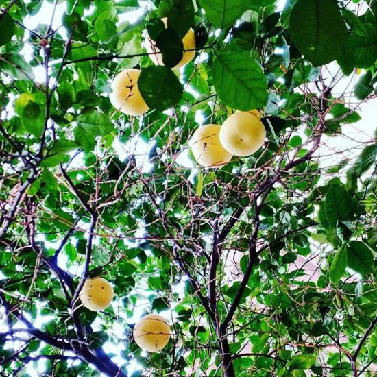
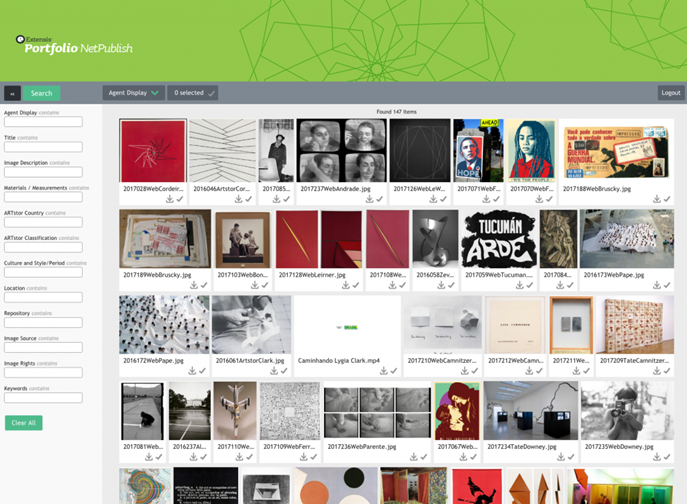

In January I joined the Visual Resource Center of the Art History department at UC Riverside. I’ve been in the new gig for approximately two months. Its been a joy getting to know the campus community which functions very much like a small city. I was surprised to learn that UCR is the 5th oldest university in the UC system. It is home to the Citrus Experiment Station, the campus is surrounded by citrus groves and there are many public fruit trees on campus. I am about a foot too short to reach the remaining pomelos right now and I have given serious thought to investing in a fruit picker basket. The university is UCR is incredibly diverse and has an aggressive strategic plan to position itself as a premier research university. It is currently in a period of growth and expansion, this includes the Art History department which is in the midst of a search for an Islamacist. Visual Resources is at the crossroads of art, technology, teaching, and research. I feel very lucky that I get to learn something new everyday.
My first priority I’m working on is getting our DAM configuration settled and web galleries published so they are accessible to faculty and students. We have a general purpose digital image collection that is available to students and faculty but we’d really like to see active use of web galleries for private faculty collections as well as galleries created for specific classes. The DAM tool we are using (Portfolio 2016) does a pretty seamless job out of the box, but we’ve made a few tweaks to meet our workflow & metadata needs. It’s important to acknowledge all the work that goes into the creation and management of these assets, before the images get to publishing stage. First there is image capture via camera or scanner. Sometimes there is editing of images supplied by faculty, perhaps phone snapshots taken while researching in the field or in libraries/archives. There is art historical research involved in identifying and cataloging the object depicted, which then gets translated into metadata for search-ability and image metadata involved so that the right assets are discoverable at the right time.

One of the workflow tweaks I made was to match the cataloging fields with exact names in the cataloging tool so that the use is clear and so that import/export will be that much easier. Another was to lower the dependence on Smart Galleries as part of the workflow because too full/too many dynamic galleries drags the speed and performance of Portfolio. We now have one smart gallery driven by metadata, that tells us when archive images are ready to be processed into access files. This gallery also serves as a checksum to verify recently processed images. I foresee continual optimization of the workflow, but this seems to be working well for us and I couldn’t be happier. I’m also thrilled to report that our current workflow, metadata schema, and legacy documentation is now published to an internal wiki so it can be a resource for future training or upgrades.
Right now, we have a class gallery for a professor teaching Latin American art that is updated shortly after the end of class each week. Many of these images are protest art, a relevant topic for 2017, and are not found in the usual repositories. The content provided to the VRC by the professor via PDF’d powerpoint are then sourced for better quality images, object/image catalogued, and ingested into the DAM. Within a day or so, the students can then access a (responsive!) web gallery to study from. I am told that this gallery is much easier to navigate than the repository made available through the university’s online learning system. We were able to host video too which is very exciting! More work to be done in this area, but we are looking forward to supporting more video formats and other a/v materials. What other multimedia file formats might we support; VR, GIS, data vis, 3D models or architecture?